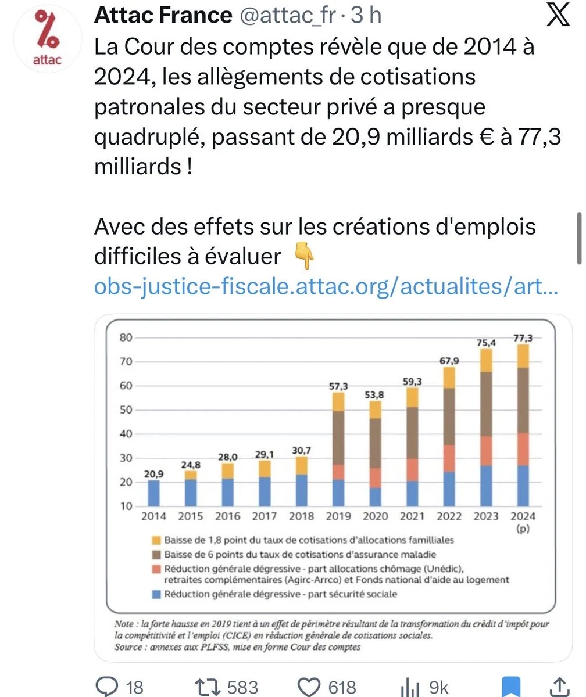

Réponse sur X
Cotisations patronales. Le rapport de la Cour des comptes discuté dans le fil
Date de publication sur X · 29 mars 2026
Repères éditoriaux
La Cour chiffre les allègements généraux à 20,9 milliards d’euros en 2014 et à 77,3 milliards en 2024 pour le secteur privé.
Texte de la publication sur X
De 2014 à 2024, les allègements de cotisations patronales sont passés de 20,9 à 77,3 milliards d’euros. Presque quadruplé en dix ans. Source : Cour des comptes, relayé par Attac. https://t.co/P6tZWPFZIX

Sources
PCF 79 · @79Parti sur X · AR-0005-TW-2038238882982965251
À lire aussi · Fraudes sociale et fiscale. Une interpellation sur les priorités de l’État
Publications associées
- Allègements de cotisations. Quel effet sur l’emploi ? · Réponse dans le même fil
- Fiscalité. Notre réaction à une publication d’Attac · Message auquel cette publication répond